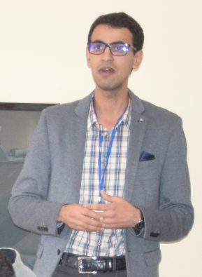

Monetary economics
Optimal and robust monetary policy, central banking, and monetary transmission in advanced and emerging economies.
(Macro) Economist · World Bank
I study monetary economics, macroeconomics, and behavioral macroeconomics — with a focus on how bounded rationality and inattention reshape optimal policy.

I am a (Macro) Economist in the Middle East & North Africa region at the World Bank, where I lead country diagnostics, macro-poverty outlooks, and the design of financing operations. My research spans monetary policy design, financial frictions, and the macroeconomic implications of departures from full rationality — how central banks and fiscal authorities should act when households and firms are boundedly rational, inattentive, or form diagnostic beliefs.
Before joining the World Bank, I spent six years as an economist at the International Monetary Fund, leading fiscal and structural work on Egypt, Kenya, and Jordan and in the Fiscal Affairs Department. Earlier, I worked on monetary transmission at the Central Bank of Morocco. I hold a Ph.D. from Mohammed V University and an engineering degree from INSEA in Rabat.
Optimal and robust monetary policy, central banking, and monetary transmission in advanced and emerging economies.
Bounded rationality, inattention, and diagnostic expectations — and how they change the conduct of policy.
Financial accelerators, debt dynamics, and the interaction between the financial cycle and the real economy.
Equity–efficiency trade-offs, automation, and policies that make growth more inclusive.
Forthcoming, International Journal of Central Banking
Journal of Economic Behavior & Organization, August 2025
Journal of Financial Stability, 2023
Political Science Quarterly, 2023
The B.E. Journal of Macroeconomics, De Gruyter, 2022
IMF Working Paper 2021/187
IMF Working Paper 2021/111
IMF Working Paper 2019/239
Working paper
Forthcoming, IMF Technical Notes and Manuals
in How to Achieve Inclusive Growth, Oxford University Press
in The Egyptian Economy, AUC Press
For replication files or model code for any other paper, please email me.
Referee
Journal of Money, Credit and Banking · Review of Development Economics · Journal of Macroeconomics · Economics Bulletin
Languages
French (bilingual) · English (bilingual) · Arabic (native)
Elsewhere
Google Scholar · RePEc · ResearchGate · X